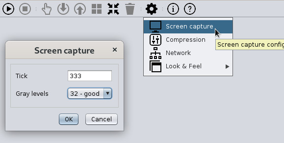
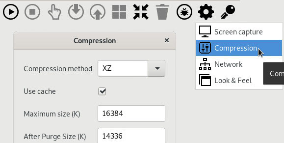
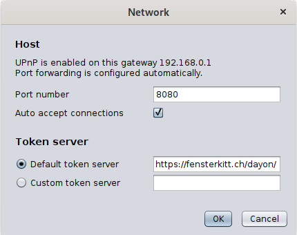
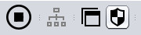
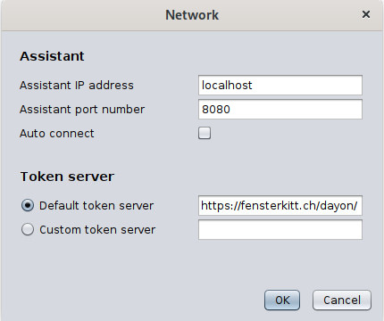

Settings
Assistant computer
Use that form to set up how the assisted screen is going to be captured; you can configure the time (in milliseconds) between two captures (aka. tick) as well as the number of gray levels. If the configured capture interval (tick) overloads the peer, the assisted side increases this value until no more captures are skipped. Starting with Dayon! 15, also sRGB colors can be used. In that case, the number of gray levels are ignored. Please note that the use of "True colors" consumes more bandwidth and uses more RAM on the assisted side.

You can then set up the compression method; two methods are available: ZIP and XZ. XZ will obtain a (much) better compression ratio but requires more CPU and RAM as it's much more complicated than ZIP and is implemented in JAVA (ZIP is being implemented using some native code in the JDK).
In addition, a cache is used that allows for not sending many times the same bitmap as for example when opening and navigating menus (i.e., what's under the menus are not sent more than once). The screen is divided into many tiles, each one being possibly cached. You've to define the maximum number of tiles in the cache. Note that a tile is currently 32x32 pixels of 256 levels, that is 1K.

Extended connection settings

Besides the port number the assistant is listening on, the token server to be used can be configured in the network settings dialog. Either the default token server or a custom one can be used. A list of available token servers can be found below. Important: Make sure you use the same token server on the assistant and the assisted side!
Assisted computer
UAC Settings
In order for the assistant to see all system dialogs, the UAC (User Account Control) settings must be adjusted under Windows. For convenience, the UAC settings dialog is directly accessible from the assisted UI. The second-lowest setting for has proven to be useful.

Extended connection settings

If you want to connect without a token, you can manually configure the assistant's port number and IP address
in the assisted's network settings dialog.
You can also enable or disable the auto connection of the assisted.
If enabled, the assisted will connect directly to the specified host without further inquiry the next time you launch it .
Additionally, you can specify the token server to be utilized. Either the standard token server or a custom server can be configured.
A list of available token servers can be found at the bottom of this page.
Important: Make sure you utilize the same token server on both the assisted and the assistant side!
Automatic connection of the assisted via command line
The host name or IP address and port of the assistant can be passed via command line parameters, where ah=host or IP address, and ap=port number:
dayon_assisted.sh ah=an.example.com ap=4242(Linux/macOS)dayon.assisted ah=an.example.com ap=4242(Linux Snap)./assisted.sh ah=an.example.com ap=4242(Linux Quick Launch)java -jar dayon.jar ah=an.example.com ap=4242(Windows/Linux/macOS)assisted.exe ah=an.example.com ap=4242(Windows Quick Launch)
If the assisted is started with these example parameters, it connects directly to the host "an.example.com" and port "4242".
Configuring Dayon! using configuration file
Since version v11.0.5, the connection parameters can be stored in a configuration YAML file.
This makes it possible to override user settings since the configuration from the YAML is always read and evaluated on start up. Users can make changes inside the application, but these only last until the next start if a YAML configuration is in place.
The primary use case for YAML configurations would be for organisations that want to use a self-hosted token server instead of the public token server, or want to specify a particular host that the assisted should automatically connect to on startup.
The structure of the assisted YAML is extremely simple:
host: "an.example.com" port: 8080 # autoConnect: false # tokenServerUrl: "https://example.org/token/"
- To prevent the assisted from automatically connecting right after the start, in
assisted.yamljust uncomment the following line:# autoConnect: false - To make assisted use other token server than the default public token server, in
assisted.yaml, just uncomment the following line and set the appropriate URL:# tokenServerUrl: "https://example.org/token/"
Important: make sure to use the same as assistant!
The assistant also has a YAML configuration file.
-
To make assistant use other token server than the default public token server, in
assistant.yaml, just uncomment the following line and set the appropriate URL:# tokenServerUrl: "https://example.org/token/"
Important: make sure to use the same as assisted!
assisted.yaml and assistant.yaml either in the Dayon! home directory,
in the user directory, or in the same directory as the .jar, resp. .exe file.
This order also corresponds to the priority with which they are taken into account in the case of multiple configurations exist. (first one wins)
Public token servers
Below you find a list of available public token servers that are free to use.
Would you like to contribute and add your RVS to the list? let me know!
Check the availability of a token server by clicking on its link. If a version number is displayed directly, it is active.